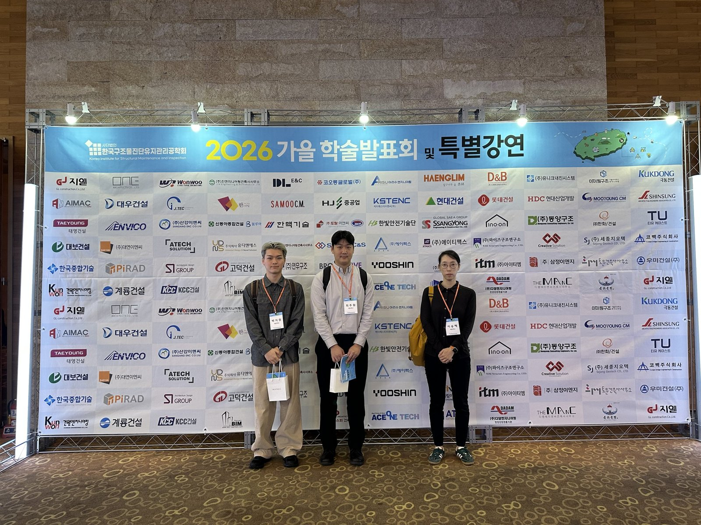
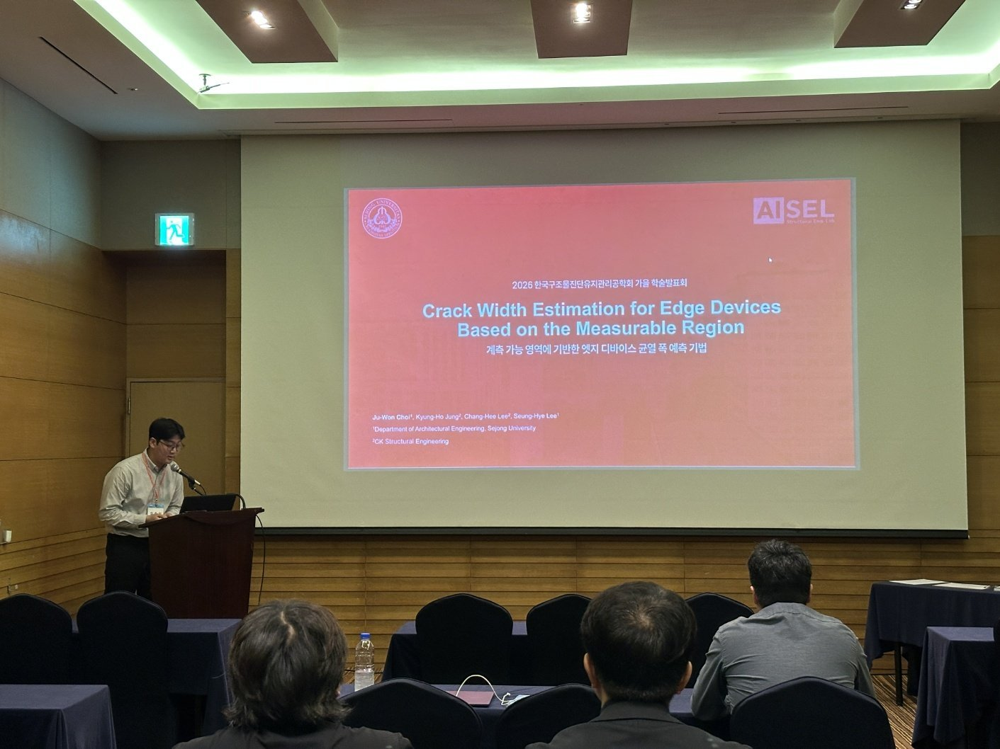
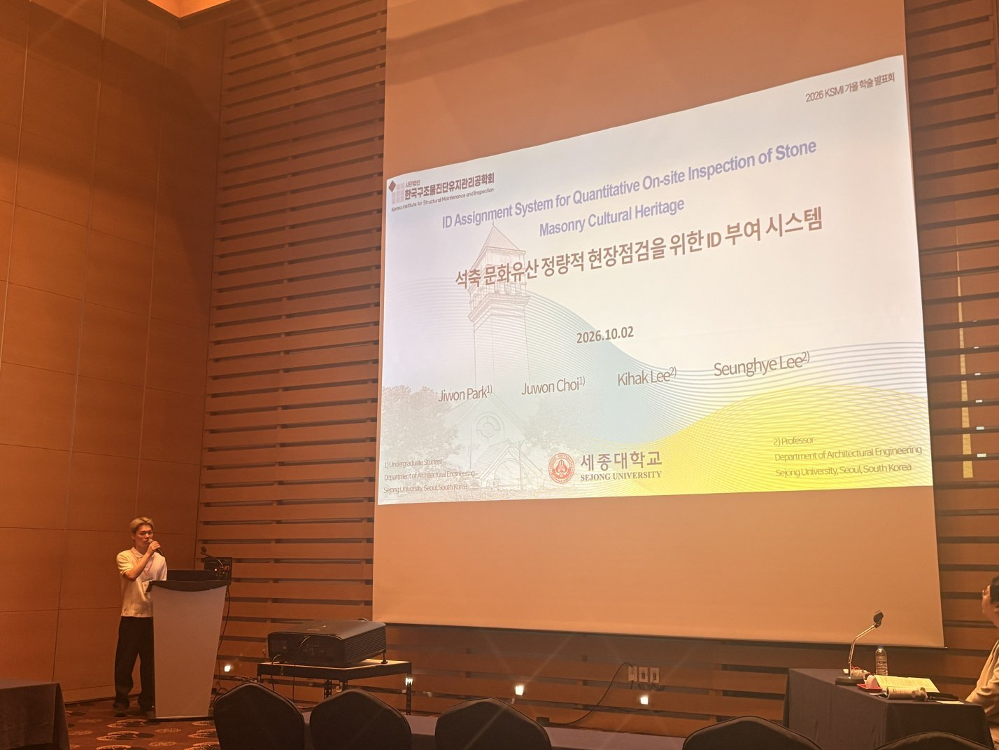

Two Oral Presentations at the KSMI 2026 Autumn Conference
At the 2026 Autumn Conference of the Korea Institute for Structural Maintenance and Inspection (KSMI), held September 30 – October 2, 2026, we gave two oral presentations: “Crack Width Estimation for Edge Devices Based on the Measurable Region” and “ID Assignment System for Quantitative On-site Inspection of Stone Masonry Cultural Heritage.” Both studies address on-site inspection using edge devices.


